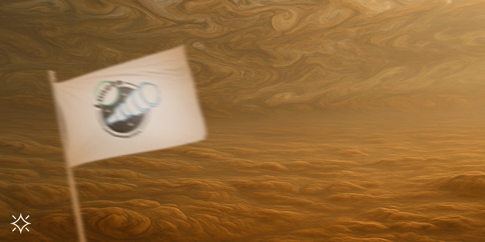
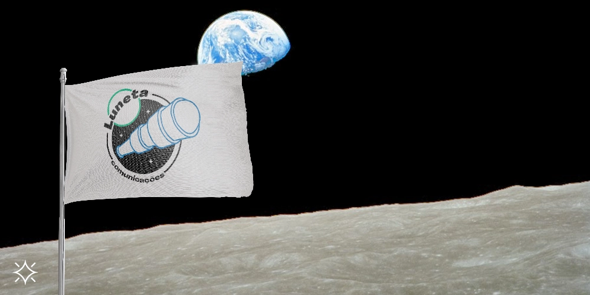
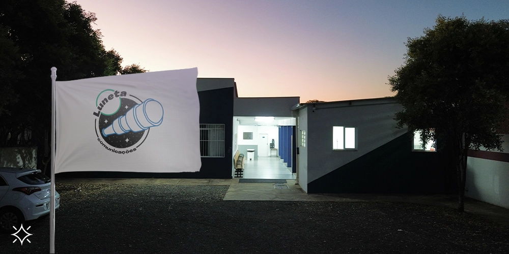

Júpiter é o maior planeta do nosso sistema solar, formado principalmente por gás e tempestades. Uma delas dura há mais de 300 anos: a Grande Mancha Vermelha — aquela mesma que você reparou na atmosfera magnífica do astro.
Júpiter representa autoridade e sabedoria. Por isso, foi o escolhido para simbolizar as coproduções de infoprodutos da Luneta com uma galera que ama tanto o que faz que decidiu ensinar os outros por meio de seus cursos.
Acreditamos que sabedoria precisa ser compartilhada — e a paixão dos nossos clientes nos inspira!



Saturno é o segundo maior planeta do nosso sistema solar e carrega seu anel icônico feito de gelo e poeira.
O gigante gasoso e tempestuoso foi o escolhido pela Luneta para representar o setor de Markenting e Comunicação para empresas públicas ou projetos advindos de recursos públicos, pois uma responsa dessas requer disciplina, estrutura, responsabilidade e limites, que é justamente o que o planeta representa.
Apesar das tempestades terríveis, a visita foi agradável.


Nosso vizinho Marte representa desejo, coragem, ação, ímpeto, força e poder e foi o escolhido para guiar os nossos clientes da Política.
Marte é o deus romano da guerra e, vai por mim, precisamos dessa energia pra enfrentar as infinitas batalhas em campanhas políticas.
E não é à toa que ele é vermelho, não! Assim como todos os nossos clientes, estes, em especial, são progressistas e entram no jogo político com objetivos de equidade e justiça socioambiental.


Sabia que o nome da nossa lua é Selene? A deusa grega em sua carruagem prateada, velando nosso planetinha azul todas as noites, o que deu a ela o arquétipo de uma grande mãe. Selene representa renovação, mistério, sonhos, desejos e amor eterno e foi em homenagem a ela que a Luneta nasceu com sonhos sociais e coletivos pra lá de ambiciosos.
Somos uma agência cooperativista baseada em Economia Solidária. Todo lucro é dividido equitativamente e todos os profissionais podem se ver em seus trabalhos e participam dele do começo ao fim. Nosso jornal independente e profissional, a Luneta TV, foca em dar voz aos mais silenciados e promover o Jornalismo ativista em prol de um mundo mais justo.



Na UEMG (Universidade do Estado de Minas Gerais), unidade Passos, foi estudada e criada a Luneta. A Terra tem um dos recursos mais valiosos e raros do universo: a vida! E, com ela, possibilidades inimagináveis. Entretanto, o seleto grupo orgânico e racional que a habita acabou se organizando de forma bastante hierárquica e desigual.
Acreditamos que as Ciências e a cooperação são algumas das soluções para repensarmos a forma de existirmos. E, no que tange ao nosso trabalho, prestamos serviços de jornalismo, publicidade, propaganda e marketing de forma justa, criativa e com compromisso social - sempre em busca de conexões com quem também enxerga além.
